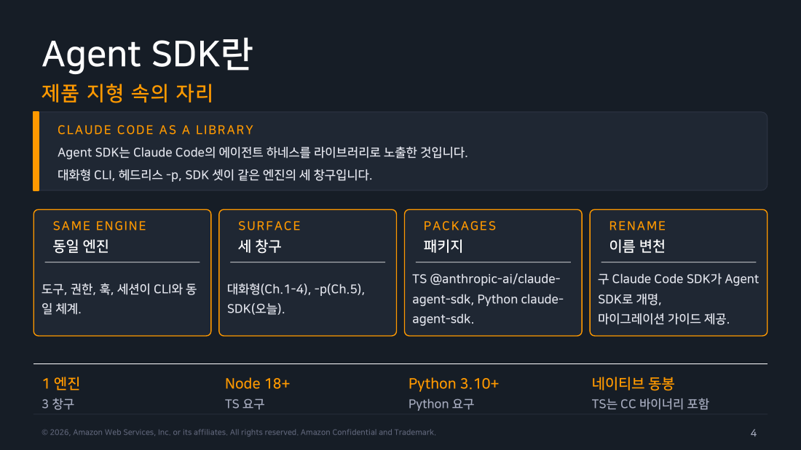
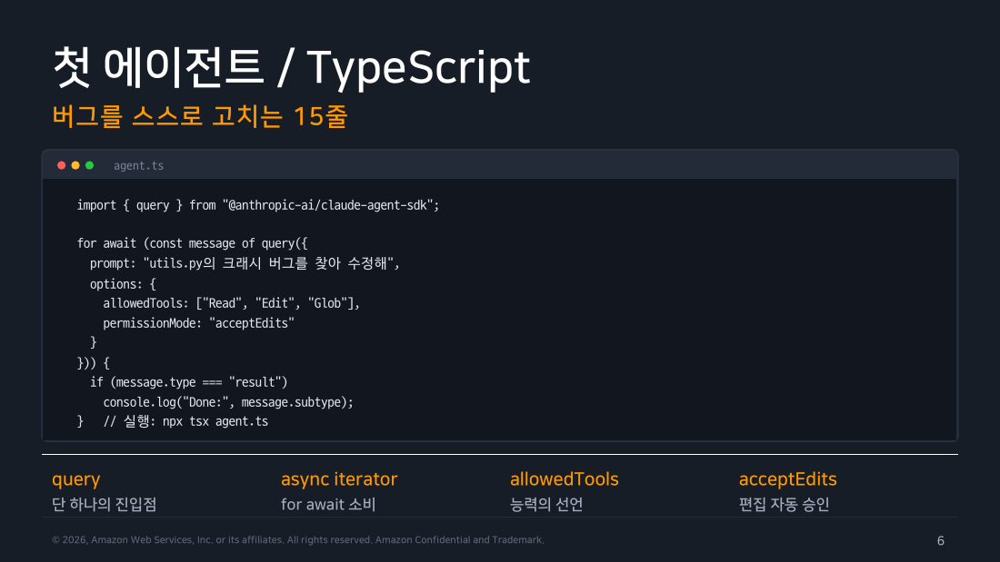
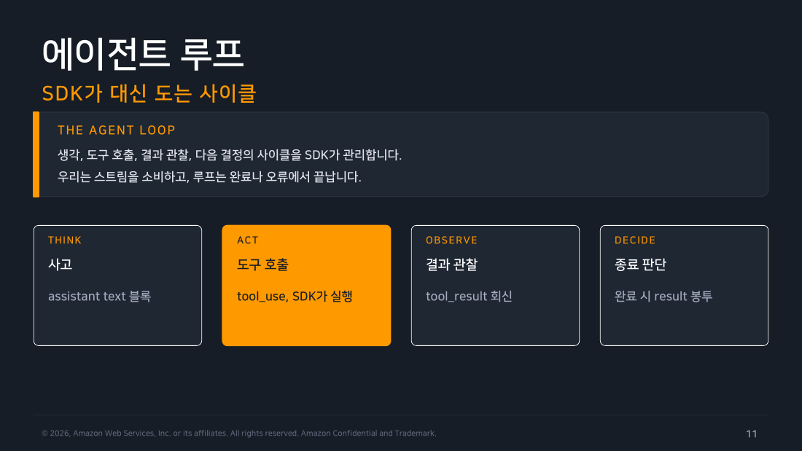

Part 1 — SDK 기본¶
한 줄 요약¶
Agent SDK는 터미널에서 쓰던 Claude Code를 코드에서 호출하고, 답과 실행 정보를 프로그램 값으로 받게 해주는 라이브러리입니다.
왜 알아야 하나¶
claude -p의 답을 셸에서 if로 분기하거나 다음 질문에 붙이려면 문자열 이스케이프와 파싱이 번거롭습니다. W5에서 하던 호출·JSON 확인·분기를 함수 호출·메시지 확인·조건문으로 옮기면 답을 값으로 바로 다룰 수 있습니다. SDK는 모델 호출·도구 실행·세션 기록을 묶어 돌리는 CLI 하네스를 새로 만드는 것이 아닙니다. 그 흐름을 코드에서 시작하고 읽는 인터페이스에 가깝습니다.
flowchart LR
A["대화형 CLI"] --> B["headless -p"]
B --> C["Agent SDK\nquery()"]
C --> D["앱의 API·배치·작업자"]
style C fill:#e3f2fd,stroke:#1976d2,color:#000
style D fill:#e8f5e9,stroke:#388e3c,color:#000
▲ 교재 슬라이드 04 — Agent SDK란
먼저 시간 순서를 잡습니다¶
query()를 한 번 불러도 문자열 하나가 바로 돌아오지는 않습니다. 호출이 시작되면 Claude Code가 여러 메시지를 보낼 수 있습니다. system 초기화 메시지가 먼저 오고, 도구를 쓰는 동안에는 assistant 메시지와 도구 결과인 user 메시지가 오갈 수 있습니다. result는 에이전트 루프가 끝났다는 실행 요약입니다. 다만 prompt_suggestion 같은 trailing system event가 뒤따를 수 있습니다. result를 포착해도 스트림 끝까지 읽고, 프로세스 예외는 따로 처리합니다.
query() 한 번
→ system 초기화 메시지(먼저 올 수 있음)
→ assistant 메시지와 도구 결과 user 메시지(도구 사용 시 오갈 수 있음)
→ result 메시지(에이전트 루프 종결: 세션 ID·턴 수·비용·구조화 출력)
→ trailing system event가 올 수 있으므로 스트림 끝까지 소비
→ 프로세스 예외는 별도 처리
await는 나중에 값 하나가 준비될 때까지 기다릴 때 쓰고, for await는 도착하는 여러 메시지를 차례로 읽을 때 씁니다. 지금은 for await가 위 시간축의 메시지를 하나씩 받는 반복문이라는 점만 이해하면 됩니다.
코드를 읽기 전에¶
이 챕터부터 JavaScript 코드가 계속 나옵니다. 개발 경험이 없어도 아래 개념을 알면 코드를 따라갈 수 있습니다.
import: 설치한 패키지에서 필요한 기능을 이름으로 가져오는 선언입니다.import { query } from "패키지명"은 그 패키지의query기능 하나를 가져옵니다. Node.js는 터미널에서 JavaScript를 실행하는 프로그램이고, npm은 패키지를 설치·관리하는 도구입니다. 리눅스의apt나yum과 비슷합니다.{ 키: 값 }(객체): JSON 같은 키-값 묶음입니다.options: { allowedTools: [...], maxTurns: 3 }은options아래에 여러 설정값을 묶어 넣은 것입니다.await/for await:await는 값 하나가 준비될 때까지 기다렸다가 다음 줄로 넘어간다는 뜻입니다.for await는 여러 메시지가 순서대로 올 때 도착하는 대로 하나씩 받는 반복문입니다.- 콜백: "이런 상황이 오면 이 함수를 불러줘"라고 미리 맡겨두는 함수입니다. 우리가 직접 부르는 대신 SDK가 필요할 때 호출합니다. Part 5에서 다룹니다.
- Promise: "지금은 값이 없지만 나중에 줄게"라는 약속입니다.
await는 그 약속의 결과를 실제 값으로 받는 동작입니다. - 예외(throw): 함수가 정상적으로 끝나지 못했음을 알리고 실행을 멈추는 신호입니다. 잡는 코드(
catch)가 없으면 프로그램이 종료됩니다. 셸 스크립트의set -e와 비슷합니다. Part 3에서 다룹니다.
1. 필수 완료선: 가장 작은 예제부터 봅니다¶
SDK를 쓰는 최소 코드는 짧습니다. 이 정리의 코드는 TypeScript 타입 표기를 뺀 순수 JavaScript입니다. .mjs 파일에 저장하고 node로 바로 실행합니다. 6주차 목차의 "TypeScript와 Python에서 호출"은 SDK가 지원하는 언어 선택지를 뜻하고, 여기서는 JavaScript 문법을 씁니다. 이 프로그램을 로컬에서 실행하는 것이 6주차의 필수 완료선입니다. 아직 도구 등록·스키마·권한 검사는 섞지 않습니다.
import { query } from "@anthropic-ai/claude-agent-sdk";
const q = query({
prompt: "이 디렉터리의 파일 목록을 보고 한 줄 소감을 말해줘",
options: { allowedTools: ["Read", "Glob"], maxTurns: 3 },
});
let result;
for await (const m of q) {
if (m.type === "assistant") {
for (const b of m.message.content) if (b.type === "text") process.stdout.write(b.text);
}
if (m.type === "result") {
result = m; // 여기서 멈추지 않는다. 뒤따르는 event도 끝까지 읽는다.
console.log(`\n--- session=${m.session_id} turns=${m.num_turns} cost=$${m.total_cost_usd}`);
}
}
if (!result || result.subtype !== "success") throw new Error("정상 result를 받지 못했습니다");
console.log("--- 스트림을 끝까지 소비했고 정상 완료를 확인했습니다");
실제로 실행하면 이렇게 나옵니다.
$ node hello.mjs
Codex 관련 실험용 스크립트(.mjs)들과 로그, 문서가 뒤섞여 있는 걸 보니 API 연동을 이것저것 테스트해보던 작업 디렉토리네요.
--- session=7ebab039-860c-4927-9694-3525e14adbd7 turns=2 cost=$0.1208436
query()를 부르면 코드 뒤에서 claude 프로그램이 하나 더 실행됩니다. 이것이 "자식 프로세스로 실행한다"는 뜻입니다. 우리 코드는 그 프로그램이 순서대로 보내는 메시지를 for await로 하나씩 받습니다. 위 실행에는 모델 문장을 담은 assistant 메시지와 실행 요약인 result 메시지만 나왔습니다. 메시지 스트림을 읽는다는 말은 이 for await 루프를 뜻합니다. system 초기화 메시지가 먼저 오거나 도구 결과 user 메시지가 assistant와 오갈 수 있고, stream·rate-limit·task 알림 같은 관측 event도 올 수 있습니다. result에서 정상 여부를 포착해도 break하지 않고 반복을 끝까지 마친 후 판정합니다. 프로세스 예외는 이 메시지 흐름과 별도로 처리합니다. m.type === "assistant"는 메시지 종류가 assistant인지 비교하고, for (const b of m.message.content)는 메시지 조각 중 글자 조각만 고르는 반복문입니다.
여기서 session ID는 다음 질문을 이어갈 좌표이고, turns와 cost는 호출 한 번에서 관측한 값입니다. m.result처럼 최종 문자열만 꺼내 저장하면 이 세 값은 남지 않습니다.

▲ 교재 슬라이드 06 — 첫 에이전트 / TypeScript
2. 이 코드를 실제로 돌리려면¶
랩 원문은 Node.js 프로젝트에 SDK와 Zod를 설치한 뒤 claude /status로 인증을 확인하라고 안내합니다. 이 환경에서는 실제 결과가 달랐습니다.
$ node -v
v25.8.1
$ npm install @anthropic-ai/claude-agent-sdk zod
npm error Your cache folder contains root-owned files
$ npm install --cache ./npm-cache @anthropic-ai/claude-agent-sdk zod
$ npm ls @anthropic-ai/claude-agent-sdk zod
@anthropic-ai/claude-agent-sdk@0.3.260
zod@4.5.4
$ claude /status
/status isn't available in this environment.
기본 npm 캐시에는 이 계정이 쓸 수 없는 파일이 있었습니다. 패키지나 인증 문제로 단정하지 않고 프로젝트 안의 캐시를 지정해 설치했습니다. /status 실패도 로그아웃의 증거는 아니었습니다. 바로 위 hello.mjs가 기존 CLI 로그인으로 모델을 호출했기 때문입니다.
새 자격증명을 따로 만들지 않았다는 점은 이 실습에서의 관측입니다. SDK는 시스템에 설치된 claude 명령을 그대로 부르는 대신, 패키지가 플랫폼별로 따로 받는 바이너리(예: @anthropic-ai/claude-agent-sdk-darwin-arm64)를 실행합니다. 이 환경에서는 기존 CLI 로그인 상태로 hello.mjs가 성공했습니다. 하지만 SDK가 특정 로컬 저장 경로를 읽거나 로그인 상속을 보장한다는 일반 계약은 이번 공식 SDK 문서에서 확인하지 못했습니다.
버전 드리프트가 아니라 실행 모드 제약
claude /status는 이 실습의 비대화형 실행에서 사용할 수 없었습니다(로컬에서 claude -p "/status"를 돌려도 같은 메시지가 떴습니다). claude auth status의 출력·지원 범위는 이 원고에서 일반 계약으로 주장하지 않습니다. 제품·서비스 인증은 공식 Quickstart의 ANTHROPIC_API_KEY·Bedrock·Vertex·Foundry 경로를 따르고, 이 랩에서는 작은 query()의 성공만 인증 관측값으로 남깁니다.
3. options는 이 호출의 규칙입니다¶
위 코드의 options: { allowedTools: ["Read", "Glob"], maxTurns: 3 }은 무엇을 허락하고 어디서 멈출지 정하는 부분입니다.
allowedTools는 화이트리스트처럼 보이지만, 실제로는 승인 없이 바로 실행할 도구 목록입니다. 여기에 없는 도구(Bash 포함)도 모델에는 보입니다. 모델이 호출을 시도하면 권한 모드로 넘어가고 승인 콜백이 없으면 거부됩니다. 이 예제에서 Bash가 실행되지 않는 이유는 보이지 않아서가 아니라 시도 후 거부되기 때문입니다. 도구 자체를 감추려면 tools나 disallowedTools로 따로 제한해야 합니다. bypassPermissions 모드에서는 이 목록 자체가 무시됩니다.
maxTurns는 도구를 실제로 호출한 왕복 수만 셉니다. 텍스트만 오간 마지막 턴은 포함하지 않습니다. 작은 확인 작업에는 상한을 먼저 두어 예상보다 긴 탐색이 비용으로 이어지지 않게 합니다.

▲ 교재 슬라이드 11 — options 지도
흔한 오해 바로잡기¶
"allowedTools에 없는 도구는 모델에게 아예 안 보인다" — 아닙니다. 위에서 확인했듯 Bash는 여전히 모델 눈에 보이고 모델이 호출을 시도하면 승인 콜백이 없어 그 자리에서 거부됩니다. 도구 자체를 감추고 싶다면 tools나 disallowedTools로 따로 제한해야 합니다.
"SDK 실습이 잘 됐으니 이 인증(구독 로그인 상속)을 그대로 서비스에 써도 된다" — 아닙니다. 로컬 개발 환경에서는 통하지만 공식 문서는 claude.ai 로그인을 제품·서비스에 얹는 걸 사전 승인 없이는 금지합니다. 실제로 배포한다면 ANTHROPIC_API_KEY나 Bedrock·Vertex·Foundry로 인증 경로를 바꿔야 합니다(Part 7에서 이어집니다).
정리¶
SDK는 claude를 대신하는 새 엔진이 아닙니다. 코드 뒤에서 프로그램을 실행하고 메시지를 받는 방식입니다. 기존 CLI 로그인으로 동작한 것은 이 랩의 관측값입니다. 실제 서비스에는 공식 인증 경로인 API 키나 Bedrock·Vertex·Foundry를 사용합니다. options는 무엇을 허락하고 어디서 멈출지 코드로 정하는 자리입니다. 다음 파트부터 도구·출력·권한·세션을 여기에 더합니다.
출처¶
- Claude Code Deep Dive Workshop — Chapter 6 / Part 1: Agent SDK (슬라이드 4~13)
- 공식 문서: TypeScript SDK